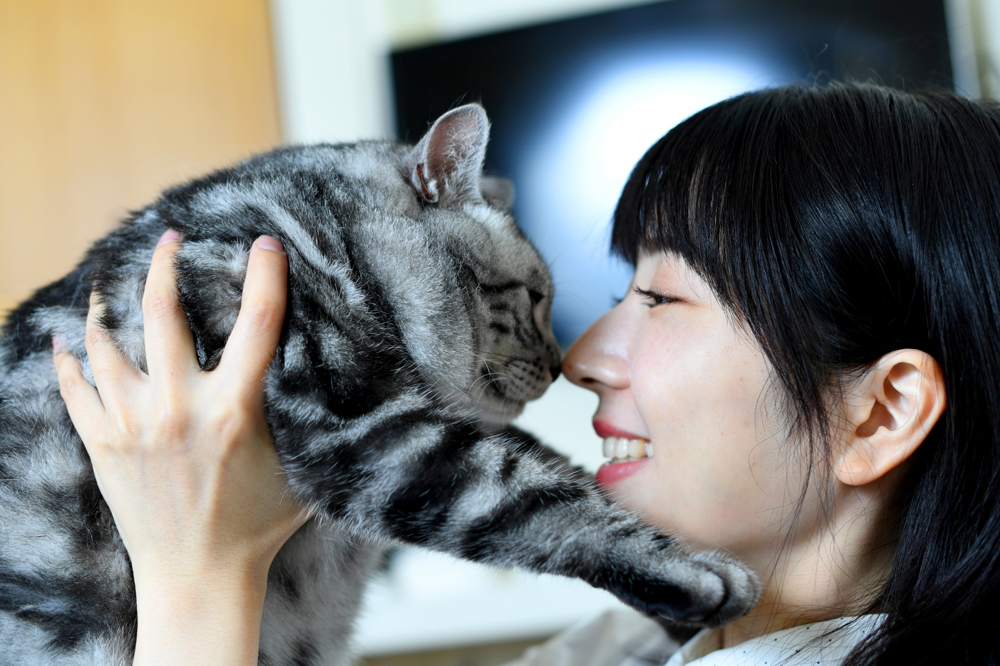
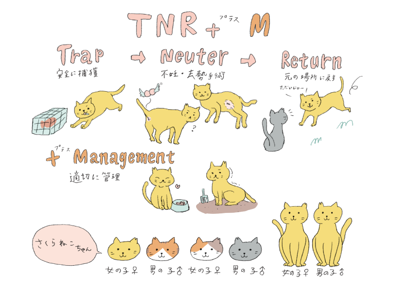
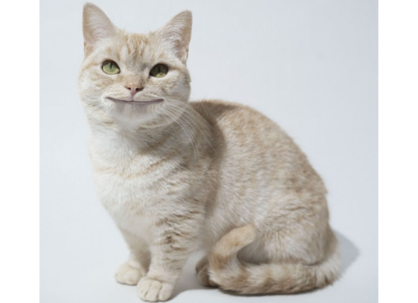

保護猫と人が幸せに暮らせる未来へ

私たちは、さまざまな事情で行き場を失った猫たちの命を守り、 人と猫が安心して暮らせる環境づくりを目指しています。
保護猫とは、飼い主を失った猫や、外で暮らしながら危険や不安を抱えている猫たちを保護し、 新しい幸せな暮らしへつなげる活動です。
小さな命にも大切な家族になれる可能性があります。
一匹でも多くの猫が安心して暮らせるように、
保護・お世話・里親探しなどの活動を通して、猫たちを支えていきます。
私たちの活動

- 猫の保護活動
- 健康管理やお世話
- 里親探しのお手伝い
- 地域の猫との共生を考える活動
猫たちが幸せな一生を終えられるよう、 できることから丁寧に取り組んでいます。
地域や活動団体によって、耳カットの左右のルールは異なります。 耳カットは、不妊去勢手術を受けた猫の目印です。
猫との暮らしを考えている方へ

保護猫を家族に迎えることは、一つの命を救う大切な選択です。 里親になること、活動を応援すること、猫について知ること。 それぞれの形で、猫たちを支えることができます。
保護猫との出会いは、新しい家族との暮らしの始まりです。 一匹の猫との出会いが、かけがえのない幸せにつながるかもしれません。 猫と暮らすことについて、一緒に考えてみませんか。